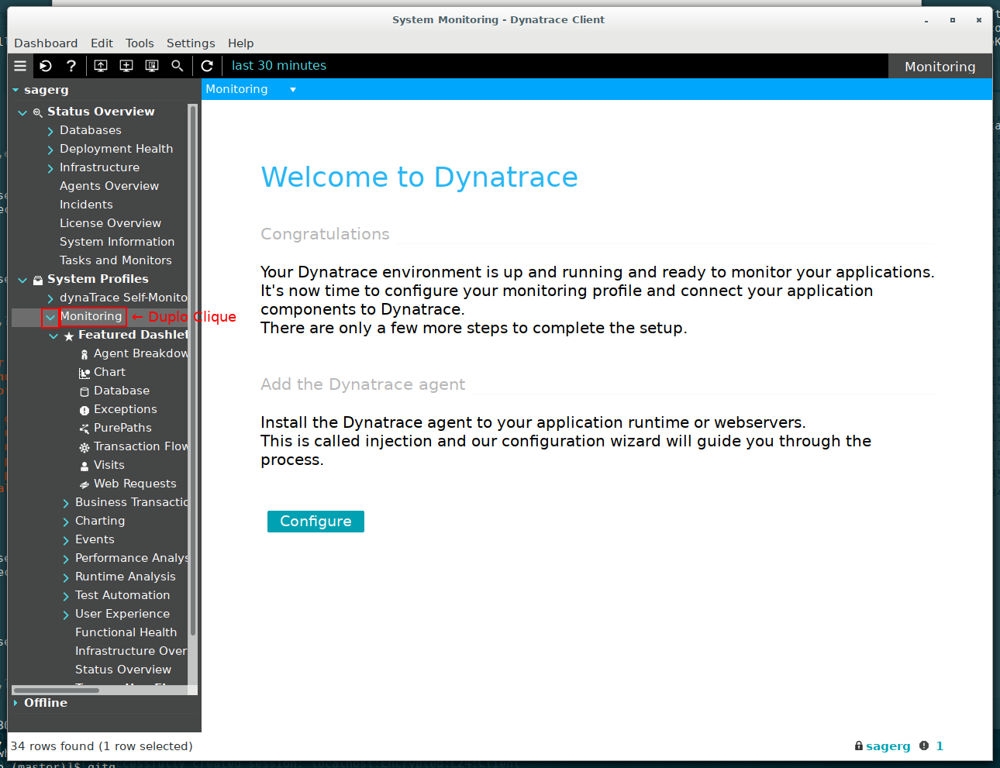

Identificando problemas e erros esquisitos em softwares
(com Dynatrace AppMon)
Gabriel B. Casella
SATI 2017 - UTFPR-PG
Plano de execução
- Instalar o Dynatrace AppMon;
- Monitorar o Tomcat (e configurar o AppMon para isso);
- Deployar duas aplicações exemplos utilizando Hibernate e MySQL/MariaDB e encontrar os erros;
- Intervalo;
- Conheçendo uma aplicação para simulação de um ecommerce.
O que é Dynatrace AppMon?
- Basicamente o Dynatrace AppMon é uma ferramenta de monitoração APM/DPM
- Utilizada para gerenciamento de performance e experiência de usuários em aplicações de várias cores e sabores
- Vamos utilizá-la aqui para realizar algo bem mais simples: Identificar bugs nos programas exemplo

- O intuito é mostrar o básico para se replicar com outras aplicações criadas aqui dentro da Universidade
Procedimentos Iniciais
- Peça a licença gratuita aqui:
https://www.dynatrace.com/trial/appmon/ - Faça o download do Dynatrace AppMon (de acordo com sua plataforma):
https://community.dynatrace.com/community/pages/viewpage.action?title=Step+1+-+Download+and+install+Dynatrace&spaceKey=EVAL - Realize a instalação;
- Importe e ative a licença;
- Inicie os processos: Server + Collector:
~//init.d/dynaTraceServer start && ~//init.d/dynaTraceCollector start ~/dynatrace-7.0/init.d/dynaTraceServer start && ~/dynatrace-7.0/init.d/dynaTraceCollector start- Inicie o Client (trocando o diretório de instalação caso não seja o padrão):
~/dynatrace-7.0/dtclient - Aceite a conexão padrão;
- Importe a licença do arquivo seguindo o wizard;
- Restarte o server;
Monitorando o Tomcat - Adicionando uma tier


Monitorando o Tomcat - Alterando o System Profile:
Maior visibilidade nas exceções

Instrumentando o Tomcat:
Reconhecendo as transações pelo AppMon
- Tomcat 6:
- Open the
catalina.shscript in your Tomcat installation. By default, this file should be located in the<TOMCAT_HOME>/binfolder. - Add the
CATALINA_OPTSvariable and set it to-agentpath:<DT_HOME>/agent/lib/libdtagent.so=name=<AgentName>,server=<CollectorName>
as shown in highlighted text below.
...
#
# $Id: catalina.sh 609438 2008-01-06 22:14:28Z markt $
# -----------------------------------------------------------------------------
export CATALINA_OPTS={dtagentstring_unix}
# OS specific support. $var must be set to either true or false.
Instrumentando o Tomcat:
Reconhecendo as transações pelo AppMon
- Tomcat 6 - Exemplo de configuração do agentpath:
...
#
# $Id: catalina.sh 609438 2008-01-06 22:14:28Z markt $
# -----------------------------------------------------------------------------
export CATALINA_OPTS=-agentpath:~/dynatrace-7.0/agent/lib/libdtagent.so=name=Tomcat_Monitoring,server=127.0.0.1
# OS specific support. $var must be set to either true or false.
- Posteriormente, inicie/reinicie o Tomcat;
- Para outros exemplos/situações, consulte a documentação:
https://www.dynatrace.com/support/doc/appmon/installation/application-integration/apache-tomcat/
Instrumentando o Tomcat:
Reconhecendo as transações pelo AppMon
- Tomcat 7 or later:
- On a 64-bit Ubuntu and a Tomcat 7 package installed with
sudo apt-get install tomcat7, createsetenv.shinCATALINA_HOME/bincontaining:
It is recommend to configure environment variables in the setenv.bat or setenv.sh script located in CATALINA_BASE/bin or CATALINA_HOME/bin. This file is not typically found in a default Tomcat-only installation and must be created manually, co-located with startup, (in bin)
Instrumentando o Tomcat:
Reconhecendo as transações pelo AppMon
- Tomcat 7 or later:
export CATALINA_OPTS="-agentpath:<DT_HOME>/agent/lib/libdtagent.so=name=<AgentName>,server=<CollectorName>"
export CATALINA_OPTS="-agentpath:~/dynatrace-7.0/agent/lib/libdtagent.so=name=Tomcat_Monitoring,server=127.0.0.1"
https://www.dynatrace.com/support/doc/appmon/installation/application-integration/apache-tomcat/
Verificando o agente no AppMon
Verificando as transações no AppMon
- Acesse a página do Web Application Manager para gerar transações: http://127.0.0.1:8080/manager/html
- Depois, abra o dashlet de PurePaths no AppMon:
Testando aplicação exemplo 1:
Hibernate Web App - JavaWebTutor
- Faça o download do programa de exemplo por aqui;
- Importe o projeto no Eclipse;
- Edite o arquivo
src/hibernate.cfg.xmlpara se adequar as conexões/usuário/senha do bando de dados; - Exporte o .war do projeto
- Talvez seja necessário o plugin "Java EE Developer Tools"
- Faça o deploy do war no Tomcat
- Acesse a aplicação: http://127.0.0.1:8080/HibernateWebApp;
- Espere 1 minuto, volte ao dashlet de PurePath no AppMon, aperte F5 e clique na transação;
- Qual o erro encontrado?
Testando aplicação exemplo 1
Testando aplicação exemplo 1
Corrigindo o erro:
- Execute o script
db.sqldentro do projeto (Ele irá criar a database jwt no banco; - Acesse a aplicação novamente: http://127.0.0.1:8080/HibernateWebApp;
- Espere 1 minuto, volte ao dashlet de PurePath no AppMon, aperte F5 e clique na transação;
- O erro foi solucionado?
Testando aplicação exemplo 1
Testando aplicação exemplo 1
Testando aplicação exemplo 2:
- Faça o download do programa de exemplo por aqui;
- Edite o arquivo dentro dos dois pacotes, .war,
src/main/webapp/WEB-INF/spring/appServlet/servlet-context.xmlpara se adequar as conexões/usuário/senha do bando de dados; - Faça o deploy do dois wars no Tomcat
- Acesse a aplicação: http://127.0.0.1:8080/SpringMvcHibernateXML-1.0.0-BUILD-SNAPSHOT-erro;
- Espere 1 minuto, volte ao dashlet de PurePath no AppMon, aperte F5 e clique na transação;
- Qual o erro encontrado?
Testando aplicação exemplo 2
Testando aplicação exemplo 2
Sem erro:
- Acesse a aplicação sem erro: http://127.0.0.1:8080/SpringMvcHibernateXML-1.0.0-BUILD-SNAPSHOT-sucesso;
- Espere 1 minuto, volte ao dashlet de PurePath no AppMon, aperte F5 e clique na transação;
- O erro foi solucionado?
Testando aplicação exemplo 2
Testando aplicação exemplo 2
Uma aplicação para simulação de ecommerce
- easyTravel provides a web portal which allows users to log in, search for journeys to various destinations, select promotional journeys directly that are offered and to book a journey using credit card details;
- easyTravel is a multi-tier application implemented in .Net and Java. The starting of the various tiers and the enabling/disabling of different problem pattern plugins is done via a separate easyTravel Launcher
EasyTravel
EasyTravel
EasyTravel
EasyTravel
- Instale o easytravel com:
java -jar dynatrace-easytravel-linux-x86_64-2.0.0.<version-number>.jar - Inicie a aplicação:
<easyTravel-installation-dir>/weblauncher.sh - Instale o System Profile do EasyTravel;
- Inicie a seção de UEM → Standard;
- Brinque com a aplicação;
- Verifique as transações no AppMon.
EasyTravel - Problem Pattern
- Abra a seção de Problem Pattern e inicie um problema;
- Brinque com a aplicação;
- Verifique as transações no AppMon.